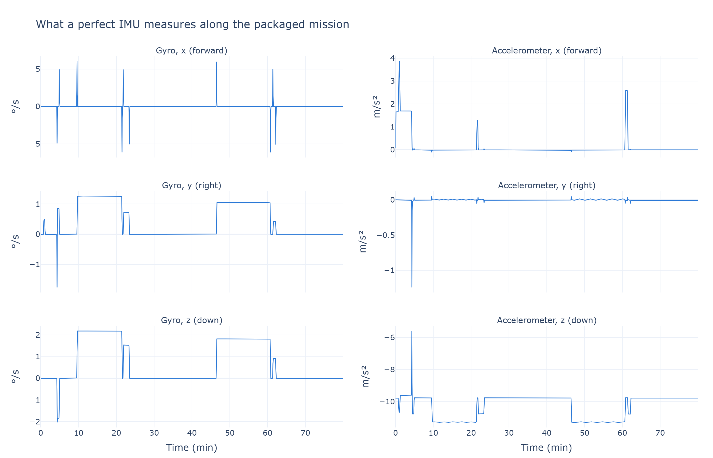

Truth trajectory & ideal IMU¶
To test a navigator you need to know the right answer. ins_sim builds a truth trajectory from a mission written in YAML: the vehicle's actual position, velocity and attitude at every sample. It then works out what a perfect IMU would have measured along that trajectory. Those ideal gyro and accelerometer outputs feed the IMU error model; the truth itself is what every navigation error is measured against. The mission you pick in the GUI is the one this page builds.
Key results
- The mission is assembled phase by phase in metres along North, East and Down from the start point. Its velocity is then smoothed, so every manoeuvre starts and ends over a few seconds.
- The attitude follows the velocity: the nose points along the flight path, and every turn is coordinated. There is no angle of attack, no sideslip and no wind.
- The ideal IMU outputs are computed as the exact inverse of the navigator's update. Fed back through the navigator, they reproduce the truth to about \(10^{-8}\) m over the whole mission.
- The simulator therefore measures how sensor errors propagate, not how accurately the navigator integrates continuous motion.
Physical picture¶
flowchart LR
Y["Mission YAML<br/>phases"] --> V["Velocity profile<br/>v<sub>eb</sub><sup>n</sup>, smoothed"]
V --> A["Attitude<br/>from velocity"]
V --> P["Curvilinear position<br/>L<sub>b</sub>, λ<sub>b</sub>, h<sub>b</sub>"]
A --> I["Ideal IMU outputs<br/>ω<sub>ib</sub><sup>b</sup>, f<sub>ib</sub><sup>b</sup>"]
P --> I
V --> IA mission is a list of phases flown one after another: a ground roll, the takeoff, a climb, legs to waypoints with optional loiters, and speed changes. Each phase produces a stretch of position and velocity in metres from the start point, in that point's North, East and Down axes:
| Phase | Motion |
|---|---|
ground_roll |
Constant acceleration along the runway heading, up to the rotation speed |
takeoff |
Pitch and speed ramp up together over a set time |
climb |
Constant speed and flight-path angle, up to a target altitude |
waypoint |
A coordinated turn to the waypoint's bearing at the departure's nav_bank_angle_deg, then a straight or climbing leg to it; optionally a loiter of whole circles at a set bank angle |
speed_ramp |
A linear change of speed, optionally to a Mach number at the standard-atmosphere temperature of the current altitude |
A turn at speed \(v\) and bank angle \(\phi\) has radius \(v^2/(g_0\tan\phi)\), with \(g_0\) = 9.80665 m/s². The phases join with corners in their velocity, so the whole velocity profile is smoothed with a Gaussian filter of 2 s standard deviation. A roll into a turn then takes 4 to 6 s, as it would in a transport aircraft.
Continuous-time model¶
Attitude from velocity¶
The truth vehicle flies like an idealized aircraft: its nose points along its velocity, and it banks exactly as much as a coordinated turn needs.
where:
- \(\psi_{nb}\), \(\theta_{nb}\) and \(\phi_{nb}\) are the heading, pitch and roll [rad];
- \(v_N\), \(v_E\), \(v_D\) are the components of \(\vvec{eb}{n}\), and \(v_h = \sqrt{v_N^2 + v_E^2}\) is the horizontal speed [m/s];
- \(\dot\psi_{nb}\) is the rate of change of heading [rad/s];
- \(g_\text{ref}\) is gravity at the departure point [m/s²].
The roll formula is the coordinated-turn condition: the lift, tilted by the bank angle, supplies the centripetal acceleration \(v_h\dot\psi_{nb}\) sideways while still balancing gravity. Nothing pushes the aircraft sideways relative to its own axes, so the lateral accelerometer reads almost zero, even in a turn.
What a perfect IMU measures¶
A perfect gyro triad measures the body's angular rate relative to inertial space, \(\wvec{ib}{b}\). That is the body's rate relative to the NED frame, plus the NED frame's own rotation (Earth rate and transport rate):
A perfect accelerometer triad measures specific force, \(\fvec{ib}{b}\): the acceleration the vehicle needs, relative to the rotating Earth, plus the Coriolis and transport terms, minus gravity:
where \(\Cmat{n}{b} = (\Cmat{b}{n})^{\mathsf T}\) resolves NED vectors in body axes, and \(\gvec{b}{n}\) is gravity (see Earth & gravity). These are the navigation equations solved for the sensor outputs: given the motion, they return the measurements that would produce it.
As implemented¶
The truth is built on the same time grid as the navigator, one sample per IMU interval \(\tau_i\), and its outputs are written as the exact inverse of the navigator's discrete update rather than of the continuous equations.
1. Smoothing. The phases' velocity profile is low-pass filtered:
where \(G_\sigma\) is a Gaussian kernel and \(*\) is convolution.
_att_sigma = max(1, int(2.0 / tau_i))
all_vel = gaussian_filter1d(all_vel, sigma=_att_sigma, axis=0)
2. Attitude from velocity. The heading rate is a finite difference of the sampled heading:
psi = np.unwrap(np.arctan2(v_eb_n[:, 1], v_eb_n[:, 0]))
v_h = np.linalg.norm(v_eb_n[:, :2], axis=1)
theta = np.arctan2(-v_eb_n[:, 2], np.maximum(v_h, 1e-6))
psi_dot = np.gradient(psi, tau_i)
phi = np.arctan2(v_h * psi_dot, g_ref)
3. Curvilinear position. Latitude, longitude and height are integrated from the velocity, one forward-Euler step per sample, exactly as the navigator integrates them:
with the radii evaluated at \(L_{b,k}\).
L_b = np.zeros(M); lambda_b = np.zeros(M); h_b = np.zeros(M)
L_b[0], lambda_b[0], h_b[0] = L_b0, lambda_b0, h_b0
for k in range(M - 1):
R_N, R_E = wgs84_radii(L_b[k])
L_b[k+1] = L_b[k] + (v_eb_n[k, 0] / (R_N + h_b[k])) * tau_i
lambda_b[k+1] = lambda_b[k] + (v_eb_n[k, 1] /
((R_E + h_b[k]) * np.cos(L_b[k]))) * tau_i
h_b[k+1] = h_b[k] - v_eb_n[k, 2] * tau_i
4. Specific force. The velocity's rate of change over each step is a forward difference, the same difference the navigator's velocity update will take:
v_eb_n_rate = np.empty((M, 3))
v_eb_n_rate[:-1] = (v_eb_n[1:] - v_eb_n[:-1]) / tau_i
v_eb_n_rate[-1] = v_eb_n_rate[-2]
f_ib_n = v_eb_n_rate + np.cross(2.0 * omega_ie_n + omega_en_n, v_eb_n) - g_b_n
self.f_ib_b = C_n_b.apply(f_ib_n)
5. Angular rate. The body's rotation over each step is taken from the two attitudes at either end of it, exactly, as a rotation vector:
dC_b = self.C_b_n[:-1].inv() * self.C_b_n[1:] # C_b(k+1)^b(k)
omega_nb_b_fwd = dC_b.as_rotvec() / tau_i # (M-1, 3)
omega_nb_b = np.vstack([omega_nb_b_fwd, omega_nb_b_fwd[-1:]])
self.omega_ib_b = omega_nb_b + C_n_b.apply(omega_ie_n + omega_en_n)
The navigator undoes each of these steps exactly: its attitude update applies the same rotation vector, its velocity update the same difference, and its position update the same Euler step. The last sample, which has no next sample to difference against, repeats the previous outputs.
Compared with Groves (2013)
The specific force and angular rate are the kinematic definitions of Groves' navigation equations1, solved for the sensor outputs. What is specific to ins_sim is that they are discretized to invert the navigator's own first-order update, so the truth and the navigator agree exactly when the sensors are perfect.
What it looks like¶

What a perfect IMU measures along the packaged mission, at the app's default \(\tau_i\) = 0.1 s. Every feature has a simple physical reading:
- Accelerometer z: −9.8 m/s² in level flight, the reaction to gravity. It reaches −11.3 m/s² in the 30° banks of the two loiters, \(g/\cos 30°\), and −10.8 m/s² in the 25° turns to the waypoints. In the 10° climb it is \(-g\cos 10°\) = −9.6 m/s².
- Accelerometer x: the takeoff run, then +1.7 m/s² during the climb, where the pitched-up accelerometer feels \(g\sin 10°\) of gravity. Later come the two speed changes.
- Accelerometer y stays close to zero throughout, because every turn is coordinated.
- Gyros: in a banked turn the turn rate splits between the body's z axis (\(\dot\psi_{nb}\cos\phi_{nb}\)) and its y axis (\(\dot\psi_{nb}\sin\phi_{nb}\)). The x gyro shows the brief roll into and out of each turn.
Earth rate, 15 °/h or 0.004 °/s, is in the gyro outputs too, but far too small to see at this scale.
The zero-noise round trip on the Validation page feeds these outputs back through the navigator, which reproduces the truth to \(2.3 \times 10^{-8}\) m. The Strapdown mechanization page plots that residual.
Assumptions & limitations¶
Assumptions & limitations
- Point-mass flight. The body axes follow the velocity: no angle of attack, no sideslip, no wind, no vibration, and no lever arm between the IMU and the vehicle's reference point.
- No integration error to find. The outputs are piecewise constant over each step and invert the navigator's own discretization. The navigator's integration errors, such as coning, sculling and its first-order velocity update, are therefore invisible: the simulator behaves as if the navigation algorithm were perfect.
- The sample interval shows up in turns. The specific force is the forward difference across a step, so during a turn it has a small component along the direction of flight, about \(-v_h\dot\psi_{nb}^2\tau_i/2\). At \(\tau_i\) = 1 s that is about −0.1 m/s² in the loiters, as the example below prints; at 0.1 s it is ten times smaller. The navigator undoes it exactly.
- Waypoints are approximate. Bearings and distances to waypoints use a spherical Earth, and legs are straight lines in the start point's NED axes, so a distant waypoint is reached only approximately.
- Standard atmosphere. Mach numbers are converted to speed with the ISA temperature at the current altitude. The departure altitude, given above mean sea level, is used as the ellipsoidal height.
In the code¶
| Quantity | Equation | Implemented in |
|---|---|---|
| Mission phases and smoothing | Phase table, \(G_\sigma * \vvec{eb}{n}\) | build_trajectory |
| Attitude from velocity | \(\psi_{nb}\), \(\theta_{nb}\), \(\phi_{nb}\) | _euler_from_velocity in ins_sim/trajectory/kinematics.py |
| Curvilinear position | Forward-Euler \(L_b\), \(\lambda_b\), \(h_b\) | TruthTrajectory |
| Ideal IMU outputs | \(\fvec{ib}{b}\), \(\wvec{ib}{b}\) | TruthTrajectory |
| Smooth test paths | Cubic spline through NED waypoints, flown at constant speed | NEDSplinePath, TruthTrajectory.from_spline |
This example builds the packaged mission at \(\tau_i\) = 1 s, prints the ideal accelerometer output in level flight and in the most steeply banked turn, and runs the zero-noise round trip:
"""What a perfect IMU measures along the packaged mission, and the zero-noise round trip."""
import numpy as np
from ins_sim.config import default_trajectory_path
from ins_sim.navigation.strapdown import NavState, strapdown_navgrade
from ins_sim.trajectory.kinematics import build_trajectory
np.set_printoptions(precision=3, suppress=True, floatmode="fixed")
truth, _, _ = build_trajectory(str(default_trajectory_path()), tau_i=1.0)
roll = truth.euler_nb[:, 0]
# Straight and level at Mach 0.8 (75 minutes in): the accelerometers sense
# the reaction to gravity, along the body z axis, and almost nothing else.
k = int(np.searchsorted(truth.t, 75 * 60.0))
print(f"t = {truth.t[k] / 60:2.0f} min, roll {np.rad2deg(roll[k]):4.1f}°: "
f"f_ib^b = {truth.f_ib_b[k].round(3) + 0.0} m/s²")
# In the most steeply banked turn the specific force tilts with the
# aircraft, so it stays on the body z axis and grows to g / cos(roll).
k = int(np.argmax(np.abs(roll)))
print(f"t = {truth.t[k] / 60:2.0f} min, roll {np.rad2deg(roll[k]):4.1f}°: "
f"f_ib^b = {truth.f_ib_b[k].round(3) + 0.0} m/s²")
print(f"g / cos(roll) = {truth.g[k] / np.cos(roll[k]):.3f} m/s²")
# The ideal outputs are the exact inverse of the navigator's update, so
# navigating with them reproduces the truth.
start = NavState(truth.L_b[0], truth.lambda_b[0], truth.h_b[0],
truth.v_eb_n[0], truth.C_b_n[0].as_quat())
nav = strapdown_navgrade(truth.omega_ib_b, truth.f_ib_b, start, truth.tau_i,
meas_h_b=truth.h_b)
largest = np.abs(nav.r_lb_l - truth.r_lb_l).max()
print(f"Round trip reproduces the truth to within a micrometre: {bool(largest < 1e-6)}")
t = 75 min, roll 0.0°: f_ib^b = [ 0.000 -0.008 -9.782] m/s²
t = 60 min, roll 30.0°: f_ib^b = [ -0.104 0.012 -11.260] m/s²
g / cos(roll) = 11.281 m/s²
Round trip reproduces the truth to within a micrometre: True
In level flight the accelerometers also sense 0.008 m/s² sideways and a little more than gravity vertically. Holding a constant velocity relative to the rotating, curved Earth is an accelerated motion in inertial space, and those are the Coriolis and transport terms of the specific force.
References¶
-
Groves (2013), Chapter 2, for specific force and the kinematics of rotating frames, and Chapter 5 for the navigation equations that the ideal outputs invert. ↩